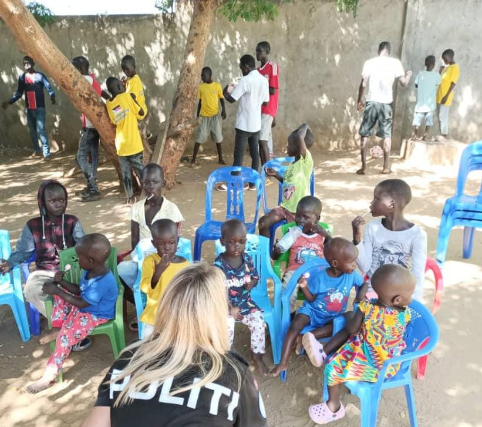
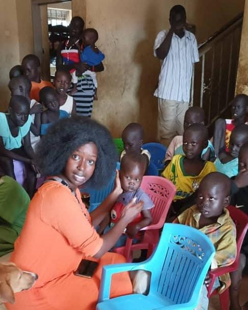
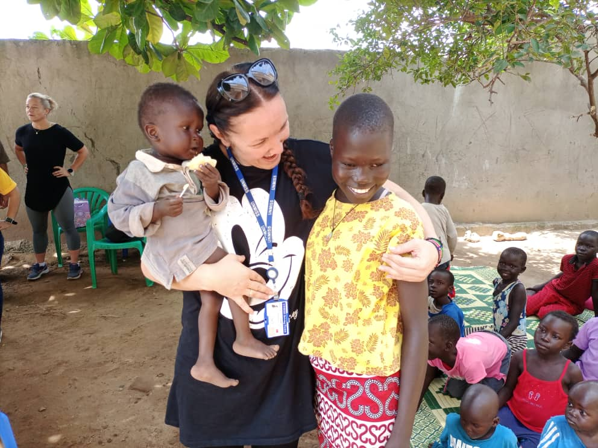
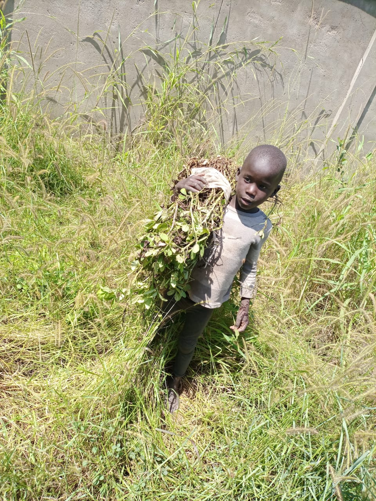
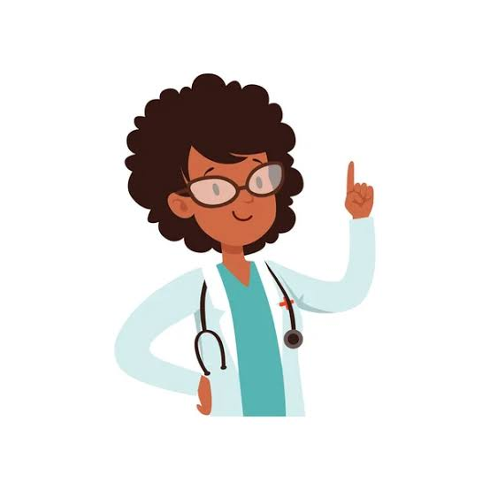
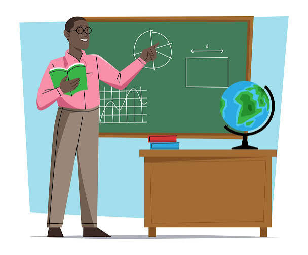
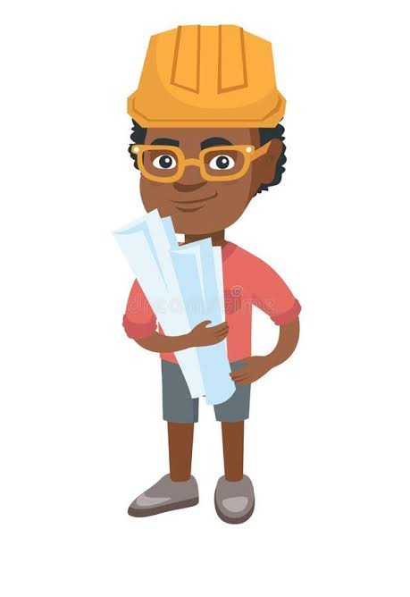
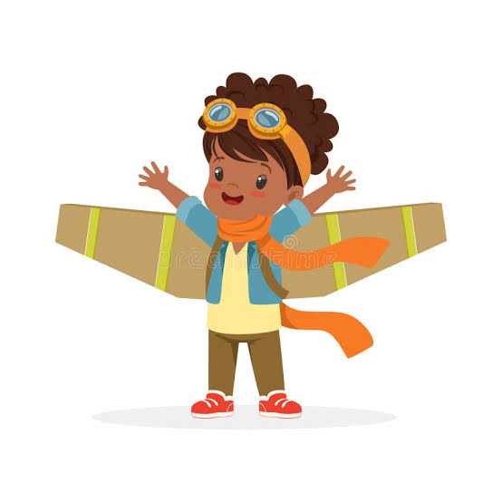

"The work an unknown good man has done is like a vein of water flowing hidden underground, secretly making the ground green."

"It takes a village to raise a child." As the African proverb reminds us, no child grows through life alone. Every young person needs guidance, encouragement and the opportunity to learn in a safe and supportive environment.
Education is more than lessons in a classroom. It nurtures confidence, inspires curiosity and equips children with the skills to shape their own future. For children who have experienced abandonment, conflict or hardship, it also restores hope by reminding them that their circumstances do not define their potential.
Many children struggle to remain in school because tuition costs exceed the centre's available resources.
Exercise books, textbooks, pens and other learning materials are often in short supply.
Some children are forced to interrupt or completely stop their education because of financial and logistical challenges.
Without sponsorship, very few young people can continue to college, university or professional training.
Children between the ages of two and eight receive basic classroom instruction and educational activities within the centre itself.
Thanks to donated learning materials and the dedication of volunteer teachers, young children are introduced to reading, writing, counting and other foundational skills while growing in a safe and encouraging environment.


Children attend nearby local primary schools whenever possible, while others receive sponsorship through schools such as Don Bosco and Kit Boarding Primary and Secondary School.
Depending on their educational pathway, students sit either the Kenyan national examinations or South Sudan's national examinations. Despite these opportunities, many children still face interruptions to their education because of financial hardship and the centre's limited resources.
Additionally, many children feel out of place in formal school settings because of starting school later than their peers or having missed years of education. Therefore, many of the opt to drop out rather than face the challenges of catching up with their classmates.
When higher education is beyond reach, vocational training provides another pathway toward independence.
Over the years, young people have received training in tailoring, computer studies and secretarial work. The centre hopes to expand these opportunities by acquiring more equipment and creating practical training spaces for future generations.

"One child, one teacher, one book and one pen can change the world." — Malala Yousafzai.
Every child deserves the opportunity to dream, learn and discover who they are meant to become. With love, education and support, today's child can become tomorrow's leader.




Every child deserves the chance to dream. Every dream deserves someone who believes in it. Help Juba Rescue Centre nurture the next generation of leaders, innovators and changemakers.
"I want to become a mucisian."
— Sarah, 13"I dream of becoming an artist."
— Peter, 12"One day I'll be an astronaut."
— John, 15"I want to become a professional footballer."
— Grace, 14Every dream deserves the chance to grow. Your generosity can help provide education, skills and opportunities for a brighter future.
Invest In A Future